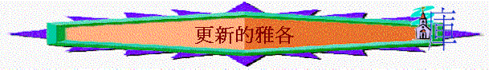

引言:試分享你清楚信主後,最大的改變是什麼? 我們今天看雅各人生一個重大改變的事情
一.他的懼怕
1.創27:41-44發生了什麼事? 雅各與以掃什麼關係? 雅各為可要逃離家鄉? 他往那裡去?
2.創31:1-3 雅各那時在那裡? 神要雅各作什麼事?
3.32:3-7又發生什麼事? 雅各有什麼心情? 為何有? 他怕什麼? 愁什麼?
4.你最近有沒有一些事情令你感到懼怕及愁煩的?
二.他的方法
1.32:7-8,13,20-21 雅各用什麼方法見以掃? 為可他不先走在前面? 他有什麼後著?
2.32:22-23雅各又在什麼地方? 他做了什麼事? 為何先打發他家人過去?
3.32:24提及只剩他一個人,你若是雅各,你會有什麼想法? 你的心情會如何? 會想什麼事?
三.他的經歷
1.32:24-26 又發生了什麼事? 雅各見到什麼人? 那人指誰 (何12:4-5) ? 他們作什麼? 至到什麼時候?
2.人如何可以在摔跤比賽中獲得勝利?
『摔跤』意思是一個人要把對手壓在下面。注意這�堣ㄛO說他和一個人摔跤，而是說一個人來和他摔跤，意即那一個人主動有意的要將雅各壓服在他下面。人不被主動的人摔倒,已是勝利
結果是雅各得勝利,還是那人呢? 何12:4-5又指誰得勝利?
四.他的改變
A.不靠自己專靠神
1.那人在雅各身上作了什麼事? 大腿窩扭了,對雅各有什麼影響?
2.之前提到雅各見以掃最後的後著是什麼? 大腿窩扭了,又對他什麼影響?
3.雅各已用自己的方法得勝天使,但他為可不肯讓那人走? 你猜他是否知道那人是神的使者(32:30)? 他想從神得什麼? 得神的祝福與見以掃有什麼關係? 何12:4又怎樣形容他的態度及行為?
4.一個大男人若要在人面前哭泣懇求,代表什麼事? 雅各以前的人生是靠神多些/自己的方法? 何以見得?
5.這此經歷令雅各學到什麼功課? 他的得勝在於與天使較力上得勝還是哭泣懇求呢? 若天使要勝過他,是否沒有辦法? 你認為雅各又有什麼轉變?
6.有沒有經歷走投無路而倚靠神的經歷? 試分享
B.人生讓神管治(以神成為他的神)
1.32:27-29 那人又為雅各做了什麼事情? 雅各的原名有什麼意思(創25:26)?
2.以色列這字有兩個意思: (1)是上帝戰鬥 (2)上帝統治意思, 為何天使要改雅各的名字? 他要雅各知道什麼事? 人若要得神的祝福需要什麼事情?
3.最後神有沒有祝福雅各(32:29)?
4. 33:18-20雅各又為神作了什麼事? 伊利伊羅伊以色列是什麼意思? 代表雅各(又名以色列)與神有什麼關係上的改變? 你認為他至終是否以神為他的統治者?
5.若將你的人生分很多間房子:娛樂、生命、朋友、作息、睡眠、性格、感情、興趣、學業…..不同的房,有那一間是神統治,那一間是自己統治?
總結:從今日查經中你學到什麼功課?
可參考:
http://christianresource.hypermart.net/christianresource/new_page_2533.htm